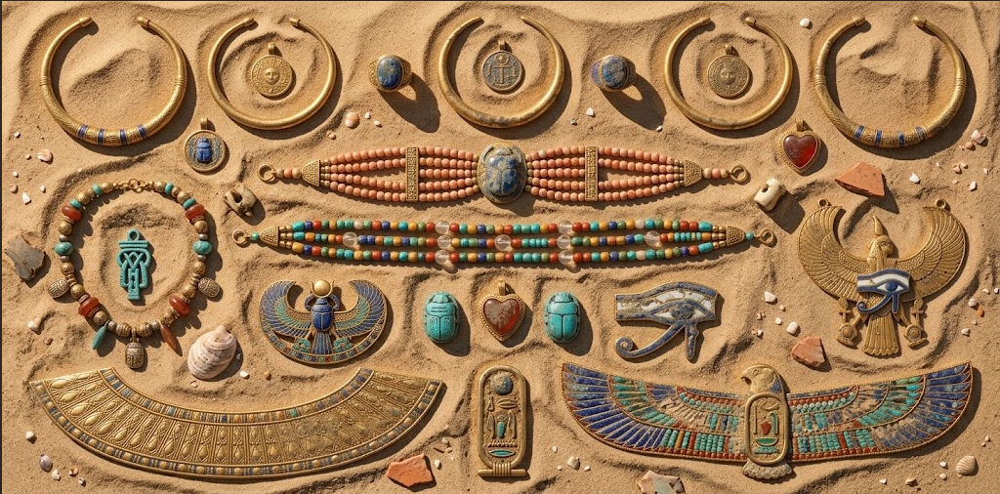

THE GALLERY OF ANCIENT EGYPT
From Djoser’s pioneering steps to the smooth, star-aligned faces of Giza the evolution of the pyramid form, revealed through six extraordinary monuments.
The Gallery

PYRAMIDS
The pyramids were monumental tombs built for ancient Egyptian pharaohs. They represent the incredible engineering, mathematics, and craftsmanship of ancient Egypt.

THE SPHINX
The Great Sphinx of Giza is a massive limestone statue with the body of a lion and the head of a human. It is one of the most famous monuments of ancient Egypt.

HIEROGLYPHICS
Hieroglyphics were the writing system of ancient Egyptians. They used pictures and symbols to record religious beliefs, historical events, names, and everyday life.

ANCIENT ARTIFACTS
Ancient Egyptian artifacts reveal how people lived, worshipped, worked, and were buried. Statues, jewelry, pottery, masks, and tools provide clues about their fascinating civilization.
The Pyramids
BENT PYRAMID
Its angle changes mid-build, from 54° to 43° — physical evidence of Egypt's engineers correcting a structural mistake in real time.

RED PYRAMID
Named for the rust-tond limestone beneath its casing, this is the first successful true (smooth-sided) pyramid ever completed.

GREAT PYRAMID OF GIZA
The largest of the three pyramids at Giza, built for Pharaoh Khufu and once the tallest human-made structure in the world.

STEP PYRAMID OF DJOSER
The Step Pyramid of Djoser is one of Egypt's earliest monumental stone structures, built for Pharaoh Djoser and designed by the famous architect Imhotep.
The Sphinx

GREAT SPHINX OF GIZA
The Great Sphinx is a colossal limestone statue with the body of a lion and the head of a pharaoh, believed to represent Pharaoh Khafre.

THE SPHINX FACE
The human face of the Sphinx is carved with royal features, including the traditional nemes headdress worn by ancient Egyptian pharaohs.

THE SPHINX PAWS
The enormous paws extend forward from the lion's body and show the remarkable scale of the monument carved directly from the bedrock.

DREAM STELA
The Dream Stela stands between the Sphinx's paws and tells the story of Prince Thutmose, who later became Pharaoh Thutmose IV.
Hieroglyphics

RELIGIOUS HIEROGLYPHICS
Religious hieroglyphics were used in temples and tombs to record prayers, sacred beliefs, and stories about the Egyptian gods.

FUNERARY HIEROGLYPHICS
Funerary hieroglyphics appeared on coffins, tomb walls, and sacred texts to guide the dead safely into the afterlife.

ROYAL HIEROGLYPHICS
Royal hieroglyphics recorded the names, titles, victories, and achievements of Egyptian pharaohs on monuments and temple walls.

EVERYDAY HIEROGLYPHICS
Hieroglyphic symbols were also used to record names, objects, places, occupations, and important events from everyday Egyptian life.
Ancient Artifacts

STATUES & SCULPTURES
Egyptian statues represented pharaohs, gods, and important people, often created to preserve their presence for eternity.

JEWELRY & AMULETS
Jewelry and amulets were worn for beauty, status, and protection, with many symbols believed to provide magical powers.

CANOPIC JARS
Canopic jars were used during mummification to store and protect the internal organs of the deceased for the afterlife.

FUNERARY MASKS
Funerary masks were placed over mummies to protect the deceased and help identify them in the journey to the afterlife.